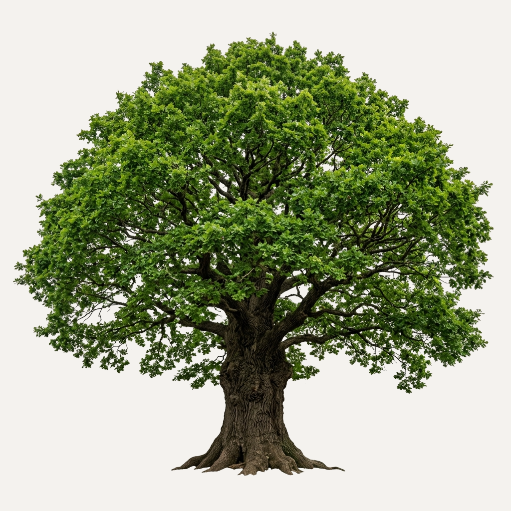
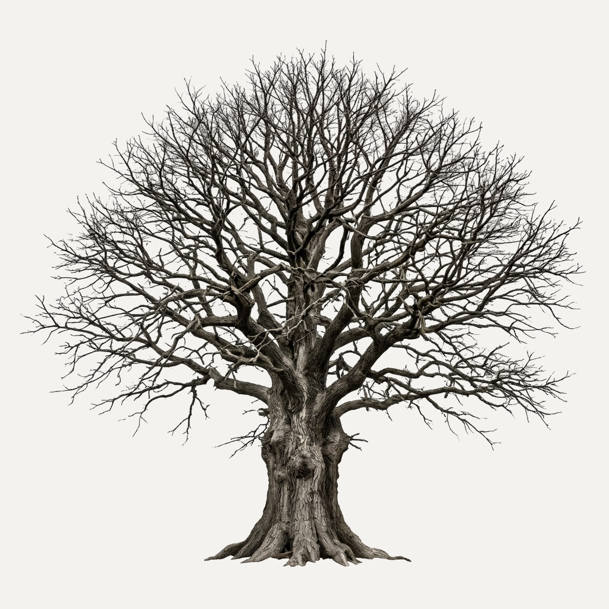

Di era modern, pemborosan energi kerap berlangsung tanpa kita sadari. Kebiasaan sederhana seperti membiarkan lampu tetap menyala di siang hari, membiarkan pendingin udara (AC) mendinginkan ruangan kosong, hingga membiarkan perangkat elektronik terus tercolok dalam mode standby (vampire power) tanpa henti menyedot pasokan listrik nasional setiap detiknya.
Lebih dari 80% energi dunia masih diproduksi dari pembakaran bahan bakar fosil seperti batu bara dan minyak bumi, yang melepaskan miliaran ton gas emisi karbon ke atmosfer. Setiap kilowatt-jam (kWh) listrik yang terbuang sia-sia berbanding lurus dengan pohon yang ditebang, hutan yang rusak, serta ancaman krisis iklim yang kian nyata bagi bumi kita.
Kampanye Hemat Energi hadir sebagai seruan kesadaran bersama bagi generasi muda, pelajar, institusi sekolah, dan masyarakat luas untuk beralih ke pola hidup hemat energi yang terencana dan berkelanjutan. Kami mengajak setiap individu mengambil aksi nyata sederhana yang dapat dimulai langsung dari meja belajar dan kamar tidur sendiri.
Mulai dari membiasakan diri mematikan sakelar listrik usai beraktivitas, mencabut pengisi daya yang tak lagi digunakan, hingga memaksimalkan ventilasi dan pencahayaan alami di pagi serta siang hari. Menjaga efisiensi energi bukan sekadar menekan biaya pengeluaran, melainkan bukti nyata cinta kita pada bumi agar pohon-pohon tetap bernapas rimbun dan alam tetap lestari bagi generasi esok.
Langkah paling sederhana menjaga kelestarian bumi berawal dari kebiasaan kecil di dalam rumah. Coba tekan sakelar dinding di samping untuk mematikan lampu dan rasakan dampaknya saat energi disimpan.
Lampu menyala menggunakan energi listrik. Membiasakan mematikan 1 lampu saat ruangan kosong selama 5 jam sehari menghemat hingga 110 kWh listrik per tahun dan mengurangi emisi karbon.
Langkah Berikutnya dalam Kampanye